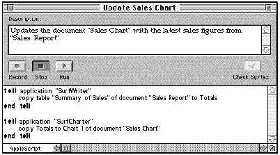
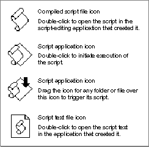

Script Editors and Script Files
A script editor is an application that allows users to record, edit, save, and execute scripts. For example, the AppleScript component uses the services of the Script Editor application.Figure 7-1 shows an AppleScript script displayed in a Script Editor window. The Record, Stop, and Run buttons control a script in much the same way that the equivalent buttons on a cassette recorder control an audio tape. A script comment at the top of the window describes what the script does. Users with some knowledge of a text-based scripting language such as AppleScript can use Script Editor to modify recorded scripts or write their own scripts.
Figure 7-1 A script window in the Script Editor application

Script Editor provides entry-level scripting capabilities, but it is not intended for intensive script development. Users who wish to write complex scripts may replace Script Editor with more sophisticated editors that provide specialized debugging and development tools.
A script like the one in Figure 7-1 can be stored in a script file represented by an icon in the Finder, or it can be stored within an application or one of its documents. Figure 7-2 shows the four icons representing the files in which Script Editor stores scripts.
Figure 7-2 Script file icons in the Finder and corresponding user actions

Script Editor and similar script-editing applications allow users to store scripts using three file types:
Like sound resources, scripts can be stored within applications and documents as well as in distinct files that can be manipulated from the Finder. Your application can use the standard scripting component routines to manipulate and execute both its own internally stored scripts and scripts stored as separate files whose icons appear in the Finder. For more information about script storage formats, see "Saving Script Data" on page 10-12.
- A compiled script file has the file type
'osas'and contains the script data as a resource of type'scpt'. Before executing the script in a compiled script file, a user must first open the script from the Finder or from an application such as Script Editor. After opening a compiled script in an application that supports script editing, the user can view the script, modify it if necessary, and execute it.- A script application has the file type
'APPL'and contains the script data as a resource of type'scpt'. Its kind is "application." A script application takes one of two forms, each with its own icon:
- A script application with the creator signature
'aplt'. A user double-clicks the icon to trigger the script.- A script application with the creator signature
'dplt'. A user can drag the icon for another file or a folder over this script application's icon to trigger a script that acts on that object.By default, when a user triggers the script in either kind of script application, a splash screen appears that allows the user either to quit or to run the script. Users can also save a script application in a form that bypasses the splash screen, running the script immediately after the user double-clicks its icon.
- A script text file contains only a plain-text version of uncompiled scripting-language statements. This format is useful primarily as a last resort for saving a script that can't be compiled because of syntax errors or other problems. It is also useful for exchanging unstyled text with other text-based applications. A user must open a script text file in a script editor and successfully compile it before it will execute.
The next two sections describe how scripting components interact with scriptable applications and with applications that execute scripts.